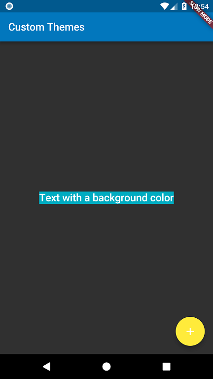

In order to share colors and font styles throughout our app, we can take advantage of themes. There are two ways to define
themes: App-wide or using
Theme Widgets that define the colors and font styles for a particular part of our application. In fact, app-wide themes are
just
Theme Widgets created at the root of our apps by the
MaterialApp!
After we define a Theme, we can use it within our own Widgets. In addition, the Material Widgets provided by Flutter will use our Theme to set the background colors and font styles for AppBars, Buttons, Checkboxes, and more.
In order to share a Theme containing colors and font styles across our entire app, we can provide
ThemeData
to the
MaterialApp constructor.
If no
theme is provided, Flutter will create a fallback theme under the hood.
MaterialApp(
title: title,
theme: ThemeData(
brightness: Brightness.dark,
primaryColor: Colors.lightBlue[800],
accentColor: Colors.cyan[600],
),
);
Please see the ThemeData documentation to see all of the colors and fonts you can define.
If we want to override the app-wide theme in part of our application, we can wrap a section of our app in a
Theme Widget.
There are two ways to approach this: creating unique
ThemeData, or extending the parent theme.
ThemeData
If we don’t want to inherit any application colors or font styles, we can create a
ThemeData() instance and pass that to the
Theme Widget.
Theme(
// Create a unique theme with "ThemeData"
data: ThemeData(
accentColor: Colors.yellow,
),
child: FloatingActionButton(
onPressed: () {},
child: Icon(Icons.add),
),
);
Rather than overriding everything, it often makes sense to extend the parent theme. We can achieve this by using the
copyWith
method.
Theme(
// Find and Extend the parent theme using "copyWith". Please see the next
// section for more info on `Theme.of`.
data: Theme.of(context).copyWith(accentColor: Colors.yellow),
child: FloatingActionButton(
onPressed: null,
child: Icon(Icons.add),
),
);
Now that we’ve defined a theme, we can use it within our Widget
build methods by using the
Theme.of(context) function!
Theme.of(context) will look up the Widget tree and return the nearest
Theme in the tree. If we have a stand-alone
Theme defined above our Widget, it returns that. If not, it returns the App theme.
In fact, the
FloatingActionButton uses this exact technique to find the
accentColor!
Container(
color: Theme.of(context).accentColor,
child: Text(
'Text with a background color',
style: Theme.of(context).textTheme.title,
),
);
import 'package:flutter/foundation.dart';
import 'package:flutter/material.dart';
void main() {
runApp(MyApp());
}
class MyApp extends StatelessWidget {
@override
Widget build(BuildContext context) {
final appName = 'Custom Themes';
return MaterialApp(
title: appName,
theme: ThemeData(
brightness: Brightness.dark,
primaryColor: Colors.lightBlue[800],
accentColor: Colors.cyan[600],
),
home: MyHomePage(
title: appName,
),
);
}
}
class MyHomePage extends StatelessWidget {
final String title;
MyHomePage({Key key, @required this.title}) : super(key: key);
@override
Widget build(BuildContext context) {
return Scaffold(
appBar: AppBar(
title: Text(title),
),
body: Center(
child: Container(
color: Theme.of(context).accentColor,
child: Text(
'Text with a background color',
style: Theme.of(context).textTheme.title,
),
),
),
floatingActionButton: Theme(
data: Theme.of(context).copyWith(accentColor: Colors.yellow),
child: FloatingActionButton(
onPressed: null,
child: Icon(Icons.add),
),
),
);
}
}
